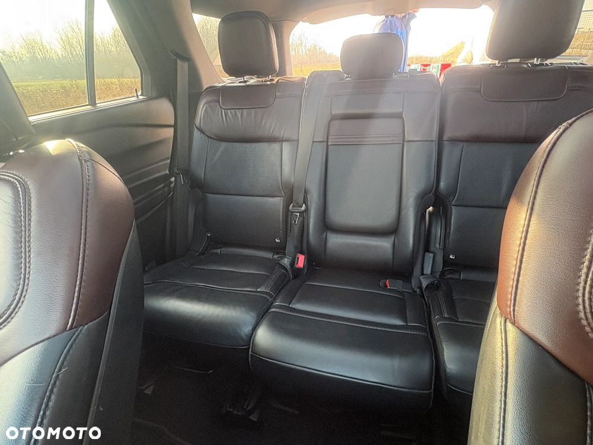
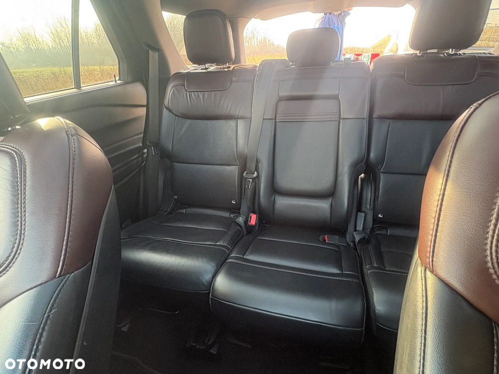

FORD Explorer 3.0 V6 EcoBoost PHEV 457 KM, A10, AWD Platinum 5D
Auto z PL salonu. Przez cały okres użytkowana przez jedną osobę.
Od nowości na auto nałożona została powłoka ceramiczna.
Serwisowany w ASO,
Wystawiam FV Vat,
Kolor - 93C - Rich Copper
Przebieg: 126 949 km,
Wyposażenie:
Bezpieczeństwo
* Blind Spot Information (BLIS) z Cross Traffic Alert (CTA) - system monitorowania martwego pola widzenia w lusterkach z funkcją ostrzegania o
pojazdach nadjeżdżających z prawej lub lewej strony, podczas manewru wyjazdu tyłem z prostopadłego miejsca parkingowego
* eCall - system automatycznego wzywania pomocy
* Elektroniczny układ stabilizacji toru jazdy (ESC) (zawiera: układ kontroli trakcji (TA), układ wspomagania awaryjnego hamowania (EBA)
* Elektryczny hamulec postojowy z funkcją Auto Hold
* Hamulec pokolizyjny
* Lane Keeping Alert (zawiera: Lane Keeping Aid (system wspomagający utrzymanie pojazdu na pasie ruchu), Driver Alert (system monitorowania koncentracji kierowcy)
* Poduszki powietrzne – boczne kurtyny powietrzne chroniące osoby w 1. i 2. rzędzie siedzeń
* Poduszki powietrzne - poduszka kolanowe dla pasażera z przodu
* Poduszki powietrzne – poduszki boczne dla kierowcy i pasażera z przodu
* Poduszki powietrzne – poduszki czołowe dla kierowcy i pasażera z przodu
* Pre-Collision Assist - system wspomagający kierowcę w unikaniu lub zmniejszaniu skutków kolizji z poprzedzającymi pojazdami lub pieszymi (wykorzystuje kamerę
przednią oraz radar; zawiera: Forward Collision Warning, Dynamic Brake Support, Distance Alert, Distance Indicator, Automatic Emergency Braking, Evasive Steering
Assist)
* Speed Sign Recognition - system rozpoznawania znaków ograniczenia prędkości
* System monitorowania ciśnienia w oponach (TPMS)
* System wspomagajacy zjazd ze wzniesienia (Hill Descent Control)
* System zapobiegający wywróceniu pojazdu (RSC)
* System ABS z elektronicznym układem podziału siły hamowania (EBD)
* Uchwyty ISOFIX do montażu fotelików na zewnętrznych fotelach drugiego i trzeciego rzędu foteli
* Układ ułatwiający ruszanie na wzniesieniach (HSA)
* Wyłącznik przedniej poduszki powietrznej pasażera
Technologie
* Auto-Start-Stop - system automatycznie wyłączający silnik w momencie zatrzymania pojazdu i uruchamiający go ponownie w momencie wciśnięcia pedału
przyspieszenia
* Terrain Management System - system wyboru trybu jazdy (Normalny, Sportowy, Eko, Śliska nawierzchnia, Droga nieutwardzona. Śnieg/Piasek, Holowanie)
Systemy audio i nawigacji
* FordPass Connect z modemem GSM - zawiera: zdalne zamykanie/otwieranie zamków drzwi, funkcję lokalizacji pojazdu, status systemów pokładowych, informację o
ruchu drogowym przez kanał GSM (live Traffic), WI-Fi hotspot, aktualizację map nawigacji przez Wi-Fi
* System nawigacji satelitarnej MP3 z SYNC3, DAB+ i B&O – kolorowy wyświetlacz dotykowy 10", Applink, Apple CarPlay, Android Auto, TMC (informacja o ruchu
drogowym), zestaw głośnomówiący z Bluetooth® i rozbudowaną funkcją sterowania głosem w języku polskim oraz funkcją wzywania pomocy, system nagłośnienia B&O
(wzmacniacz 980 W, 13 głośników + subwoofer), 2 gniazda USB, zdalne sterowanie na kierownicy, mapy Europy z widokiem 3D, menu tekstowe i komunikaty głosowe
nawigacji w języku polskim) (ICEB7)
* Wyświetlacz na tablicy zegarów - 12.3" kolorowy, konfigurowalny
Klimatyzacja
* Klimatyzacja - trzystrefowa z automatyczną regulacją temperatury oraz dodatkowym panelem sterowania dla tylnej części kabiny
Deska rozdzielcza - obszyta skórą
* Ford KeyFree - system centralnego zamka z kluczem elektronicznym (zawiera przycisk rozrusznika FordPower)
* Ford MyKey® – funkcja programowania i przypisania do kluczyka ograniczenia: prędkości maksymalnej i maksymalnej głośności systemu audio oraz możliwość
zablokowania deaktywacji systemów wspomagających bezpieczeństwo
* Gniazdko 12V w schowku pod deską rozdzielczą
* Konsola centralna - gniazdko 230V w tylnej części konsoli środkowej
* Konsola centralna - z podłokietnikiem wykończonym skórą, schowkiem i uchwytami na kubki
* Konsola sufitowa - ze schowkiem na okulary
* Lusterko wsteczne – ściemniające się automatycznie
* Osłony przeciwsłoneczne kierowcy i pasażera z przodu z lusterkiem i podświetleniem
* Oświetlenie wnętrza - diodami LED z elementami nastrojowego oświetlenia
* Oświetlenie wnętrza – lampki do czytania w 2. i 3. rzędzie foteli
* Szyby w przednich drzwiach - z dodatkową warstwą akustyczną
* Szyby - elektrycznie sterowane szyby przednich i tylnych drzwi, szyby przednich drzwi opuszczane i podnoszone jednym naciśnięciem przycisku
Fotele
* Fotele - tapicerka skórzana perforowana ciemna z kontrastującymi przeszyciami oraz logo Platinum
* Fotele w drugim i trzecim rzędzie - z regulacją położenia zagłówków w 2. kierunkach
* Fotele w drugim rzędzie - zewnętrzne fotele podgrzewane, z podłokietnikiem na środku, składane na płasko i przesuwane niezaleznie
* Fotele w trzecim rzędzie - składane i podnoszone elektrycznie (PowerFold), składane na płasko
* Przednie fotele - podgrzewane oraz wentylowane, z regulacją temperatury
* Przednie fotele - wielokonturowe, z masażem, z elektryczną regulacja położenia obydwu foteli w 10. kierunkach (przód-tył, góra-dół, pochylenie oparcia, pochylenie
siedziska, podparcie odcinka lędźwiowego), z funkcją pamięci położenia.
* Rolety przeciwsłoneczne dla pasażerów drugiego rzędu foteli
Obręcze kół i ogumienie
* Koło zapasowe dojazdowe – z obręczą stalową 18"
* Obręcze kół ze stopów lekkich - 20", wzór 5x2-ramienny, częściowo z wykończeniem maszynowym, częściowo lakierowane w kolorze grafitowym, ogumienie 255/55
(D2HBG)
 
